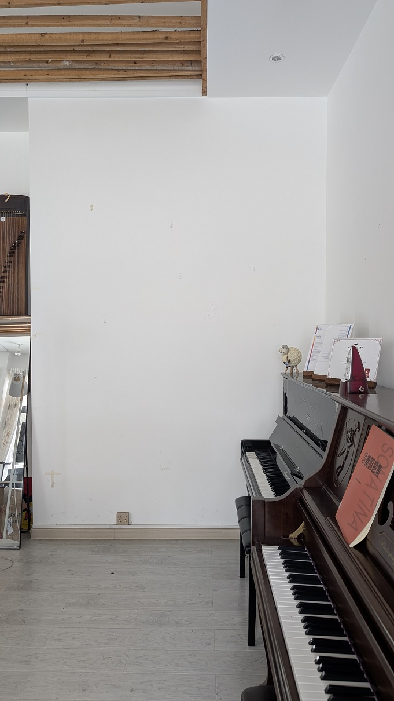

```html
<!DOCTYPE html>
<html lang="zh-CN">
<head>

<meta charset="UTF-8">
<title>相框排列</title>

<style>

html, body {
    margin: 0;
    width: 100%;
    height: 100%;
    overflow: hidden;
    background: #eeeeee;
}


/* =========================
   控制面板
   ========================= */

#control {

    position: fixed;

    top: 10px;
    left: 10px;

    z-index: 9999;

    background: white;

    padding: 10px 15px;

    border-radius: 8px;

    box-shadow: 0 0 10px #999;

    font-size: 15px;
}


/* 按钮 */

#backgroundButton {

    margin-right: 15px;

    padding: 5px 12px;

    cursor: pointer;

}


/* 缩放滑块 */

#scaleSlider {

    width: 180px;

    vertical-align: middle;

}


/* =========================
   画布
   ========================= */

#canvas {

    position: relative;

    width: 100%;

    height: 100%;

}


/* =========================
   背景图片
   ========================= */

#background {

    position: absolute;

    z-index: 1;

    left: 50%;

    top: 50%;

    transform: translate(-50%, -50%);

    max-width: 100%;

    max-height: 100%;

    object-fit: contain;

    user-select: none;

    pointer-events: none;

}


/* =========================
   所有相框
   ========================= */

.photo {

    position: absolute;

    z-index: 2;

    cursor: move;

    user-select: none;

    -webkit-user-drag: none;

    transform-origin: center center;

}

</style>

</head>


<body>


<!-- =========================
     控制面板
     ========================= -->

<div id="control">


    <button id="backgroundButton">
        切换背景
    </button>


    相框缩放：


    <input
        id="scaleSlider"
        type="range"
        min="20"
        max="200"
        value="100"
    >


    <span id="scaleText">
        100%
    </span>


</div>


<!-- =========================
     画布
     ========================= -->

<div id="canvas">


    <!-- 当前背景 -->

    


    <!-- 横版相框 -->

    
    
    
    
    
    
    


    <!-- 竖版相框 -->

    
    
    
    
    
    
    


</div>


<script>


/* =========================
   获取元素
   ========================= */

let photos = document.querySelectorAll(".photo");

let active = null;

let offsetX = 0;

let offsetY = 0;


/* =========================
   相框初始位置
   ========================= */

photos.forEach((img, index) => {


    img.style.left =
        (50 + index * 50) + "px";


    img.style.top =
        (50 + index * 40) + "px";


    /* 鼠标按下 */

    img.addEventListener("mousedown", function(e) {


        active = this;


        /* 点击后置顶 */

        this.style.zIndex = Date.now();


        offsetX =
            e.clientX - this.offsetLeft;


        offsetY =
            e.clientY - this.offsetTop;


        e.preventDefault();

    });

});


/* =========================
   鼠标拖动
   ========================= */

document.addEventListener("mousemove", function(e) {


    if (active) {


        active.style.left =
            (e.clientX - offsetX) + "px";


        active.style.top =
            (e.clientY - offsetY) + "px";

    }

});


/* =========================
   鼠标松开
   ========================= */

document.addEventListener("mouseup", function() {

    active = null;

});


/* =========================
   相框缩放
   ========================= */

let scaleSlider =
    document.getElementById("scaleSlider");


let scaleText =
    document.getElementById("scaleText");


scaleSlider.addEventListener("input", function() {


    let scale =
        this.value / 100;


    photos.forEach(function(img) {


        img.style.transform =
            "scale(" + scale + ")";


    });


    scaleText.textContent =
        this.value + "%";

});


/* =========================
   背景切换
   ========================= */

let background =
    document.getElementById("background");


let backgroundButton =
    document.getElementById("backgroundButton");


let backgroundNumber = 1;


backgroundButton.addEventListener("click", function() {


    if (backgroundNumber === 1) {


        background.src =
            "img/beijing2.jpg";


        backgroundNumber = 2;


    } else {


        background.src =
            "img/beijing1.jpg";


        backgroundNumber = 1;


    }

});

</script>


</body>
</html>
```

你的 `img` 文件夹现在应该是：

```text
img
├── beijing1.jpg
├── beijing2.jpg
├── heng1.jpg
├── heng2.jpg
├── heng3.jpg
├── heng4.jpg
├── heng5.jpg
├── heng6.jpg
├── heng7.jpg
├── shu1.jpg
├── shu2.jpg
├── shu3.jpg
├── shu4.jpg
├── shu5.jpg
├── shu6.jpg
└── shu7.jpg
```

现在打开网页：

**“切换背景”** → `beijing1.jpg` ↔ `beijing2.jpg`

**“相框缩放”滑块** → 统一改变14个相框的缩放比例，100%就是图片原始大小，50%就是原始大小的一半，150%就是原始大小的1.5倍。

`beijing1.jpg` 和 `beijing2.jpg` 都不会受到相框缩放滑块影响。
